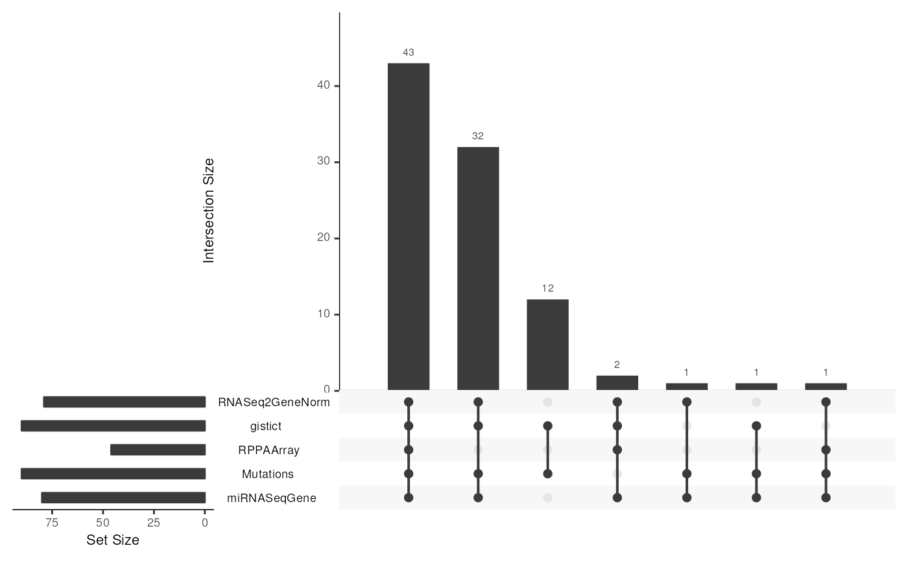
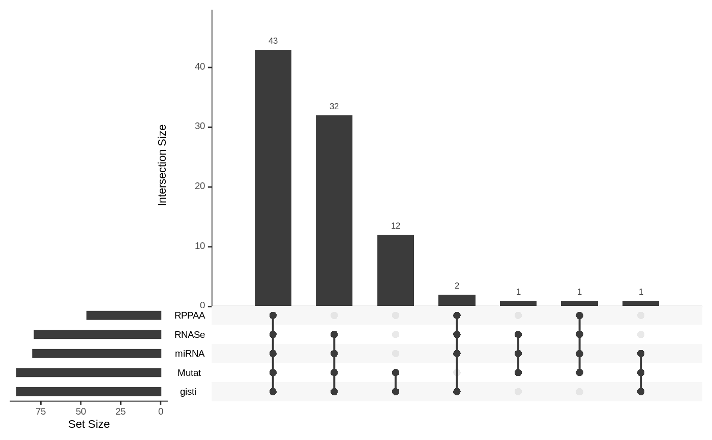

UpSetRR/upsetSamples.R
upsetSamples.RdCreate a generalized Venn Diagram analog for sample membership in multiple
assays, using the upset algorithm in UpSetR
upsetSamples(
MultiAssayExperiment,
nsets = NULL,
sets = names(MultiAssayExperiment),
nintersects = NA_integer_,
order.by = "freq",
check.names = FALSE,
...
)A MultiAssayExperiment object
numeric(1) The number of sets to analyze. If specified,
sets will be ignored.
character() A character vector of names in MultiAssayExperiment
to use. If specified, nsets will be ignored.
numeric() The number of intersections to plot. By default, all intersections will be plotted.
How the intersections in the matrix should be ordered by. Options include frequency (entered as "freq"), degree, or both in any order.
logical(1) Whether to munge names as in the
data.frame() constructor (default FALSE).
parameters passed to upset
Produces a visualization of set intersections using the UpSet matrix design
This function is intended to provide convenient visualization of assay
availability configurations in MultiAssayExperiment instances. The
UpSetR::upset function requires data.frame input and has
many parameters to tune appearance of the result. Assay name handling is
important for interpretability.
data(miniACC)
upsetSamples(miniACC)

upsetSamples(miniACC, nsets = 3, nintersects = 3)
